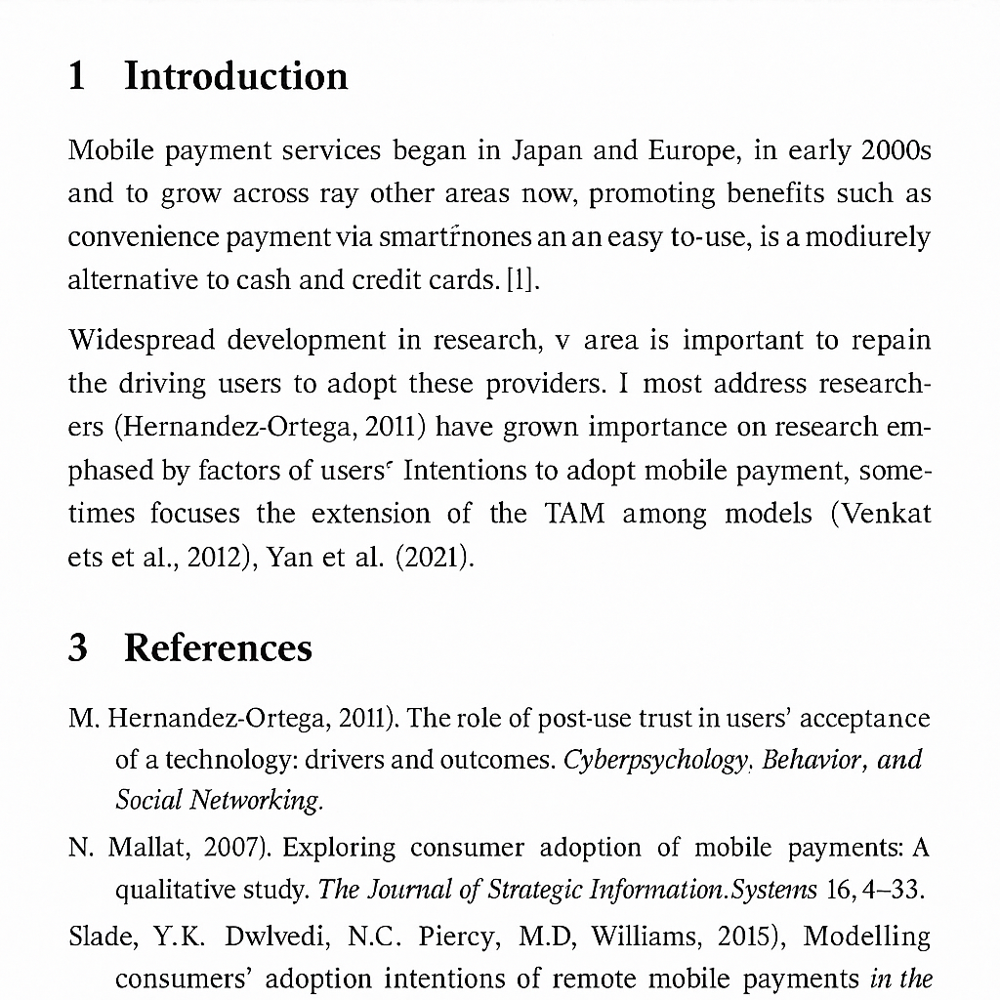
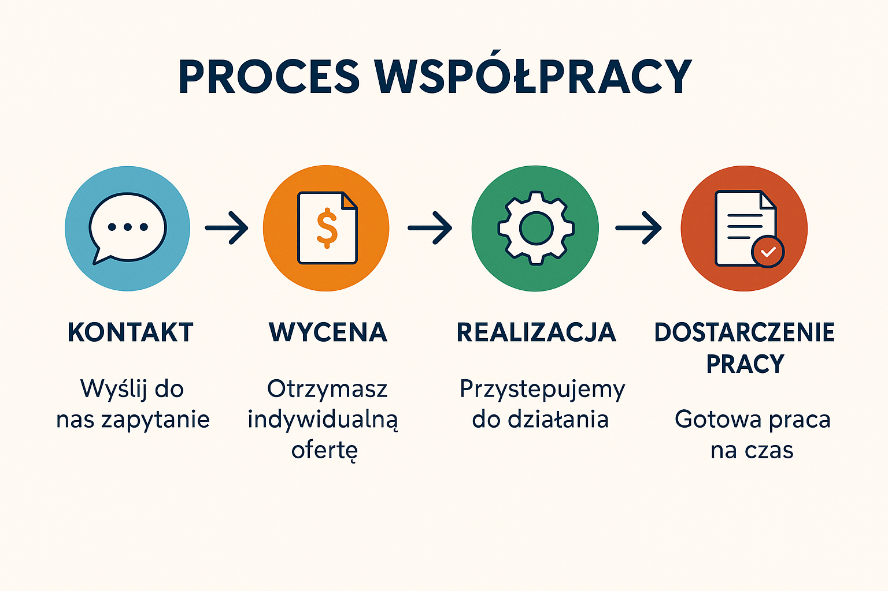
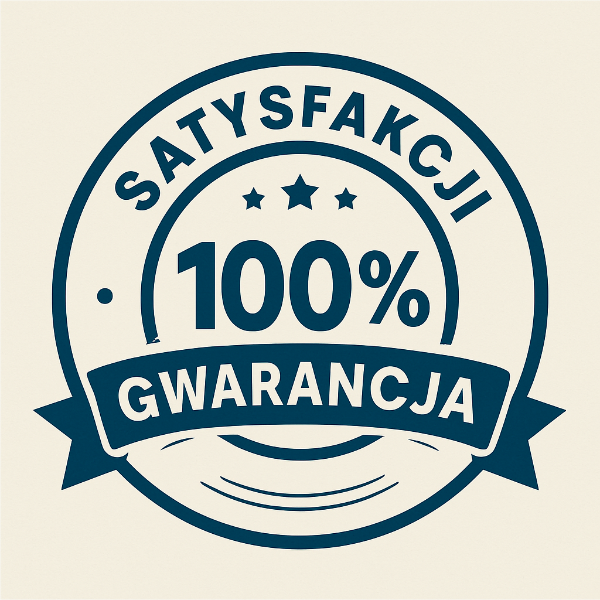
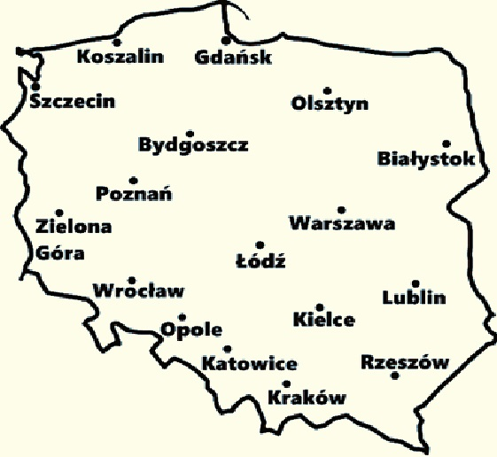
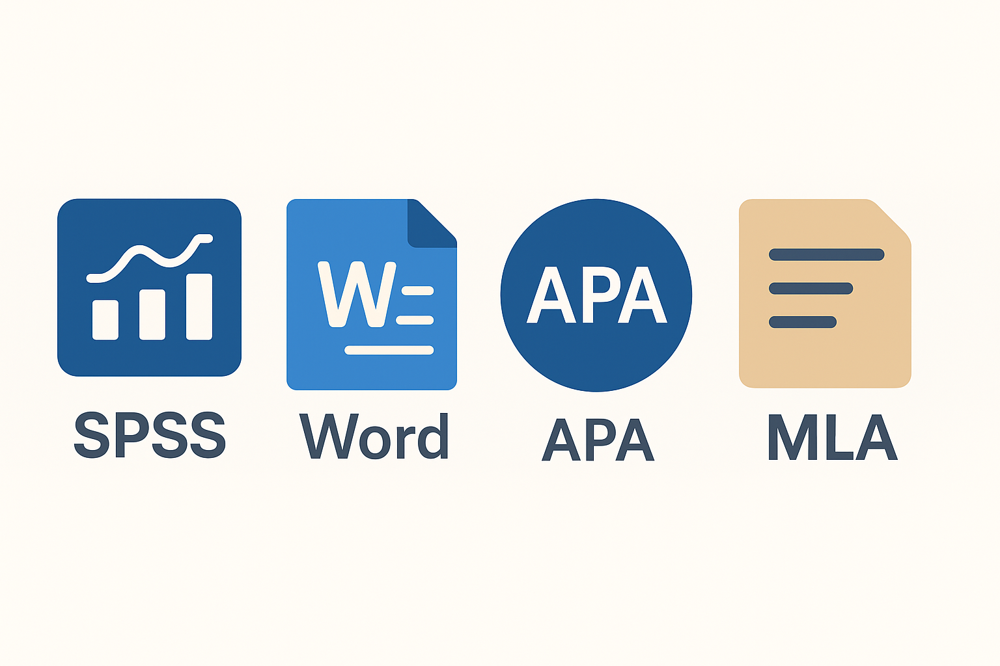

Tworzymy prace licencjackie i magisterskie pod Twoje wytyczne – zgodnie z wymogami uczelni, zgodnie z APA, MLA i systemem przypisów. Oferujemy także korekty, analizę danych, badania SPSS, przygotowanie bibliografii i całych rozdziałów. Gotowe prace naukowe dostarczane terminowo, w pełni oryginalne.




